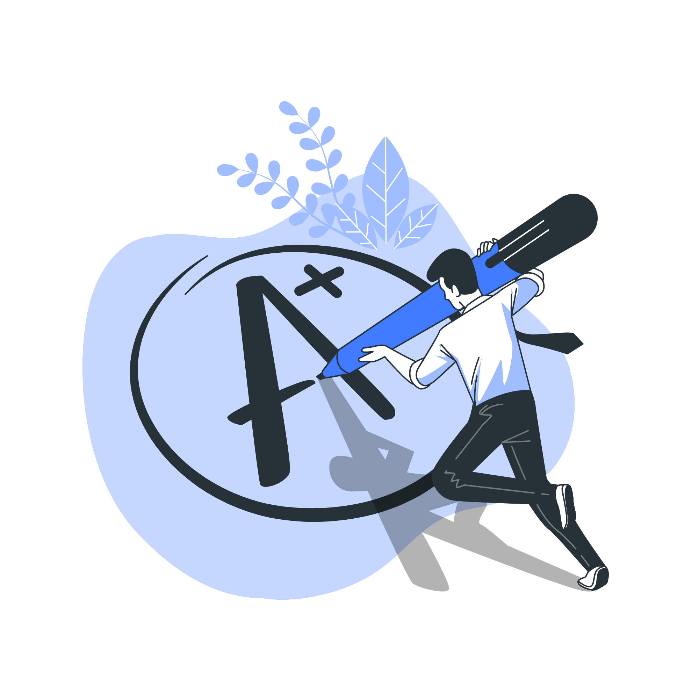

Introdução
Scrum
O Scrum é um framework ágil utilizado para gerenciamento de projetos, que tem
como
objetivo fornecer uma estrutura para equipes desenvolverem e entregarem produtos de
forma colaborativa...

Product Owner
O PO é responsável por representar os interesses do cliente ou
usuário final do produto, aprenda um pouco mais sobre essa função e como ser um bom
Product Owner.

Scrum Master
O Scrum Master é um papel dentro do framework de gerenciamento de
projetos ágeis Scrum.
O principal objetivo do desse papel é garantir que o Scrum Team esteja trabalhando de
forma eficaz

Dev team
A equipe de desenvolvimento são os construtores do método
Scrum, responsáveis em realizar
o trabalho necessário para entregar uma versão funcional ou melhorada do produto no
final

Ferramentas
Descubra o passo a passo para criar o seu backlog e burndow, e
compreenda a importância dessas documentações

Avaliações
Trabalhar em grupo não é fácil, seja com projetos simples ou mais
complicados, descubra como lidar com as avaliações de grupo e se relacionar em
time
Bem-vindo ao Tech School
A metodologia ágil é um conjunto de princípios e práticas utilizados para desenvolver projetos de forma mais flexível, rápida e eficaz, permitindo que o projeto seja dividido em partes menores, mais gerenciáveis e com entregas parciais, enfatizando acomunicação clara e contínua da equipe e do cliente. A vantagem de usar esse tipo de metodologia é apossibilidade de lidar com projetos complexos e com requisitos incertos de forma mais eficiente, assim permitindo atender as necessidades do cliente.